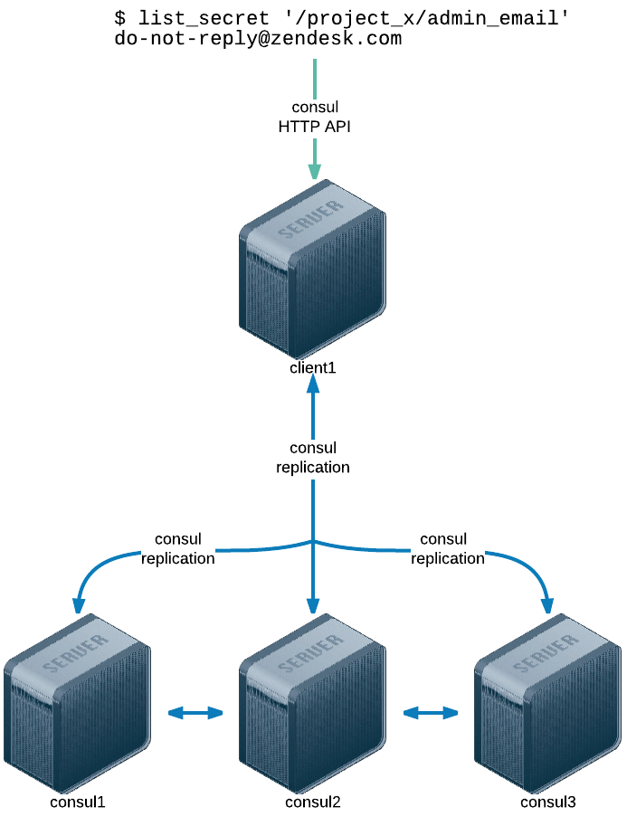

class: center, middle # Keeping & sharing secrets ## At Zendesk --- class: center, middle # Ash McKenzie <h3 style="margin-top: -40px">Tech Lead DevOps Engineer</h3> ??? * Bit about me.. * APAC Tech Lead which includes the Melbourne and Singapore offices --- class: center, middle # Zendesk ??? * Cloud based customer service platform * What does that mean? We help our customers help their customers :) * Some of our customers include - Rockstar Games, Uber, Shopify, Groupon, Twilio --- # Topics ### Secrets? ### Zendesk: Pre Vault ### Vault vs. Vault ### Zendesk's Vault ### Hashicorp's Vault --- layout: false class: center, middle name: secret-squirrel background-image: url(./images/secret-squirrel.png) # Secrets? --- layout: true class: topic-template # Secrets? --- ## Secrets? * Pieces of information that are confidential, private or sensitive in nature * Examples * Usernames and/or passwords * API keys * SSH private keys * Base64 encoded binary license files --- layout: false class: center, middle, topic-reverse background-image: url(./images/australian-bush.jpg) # Zendesk ## Pre Vault --- layout: true class: topic-template # Zendesk: Pre Vault --- ## Secrets in YAML file * A single YAML file * Environment keys at root * Used by both Chef & applications * `sync-secrets` * Ruby command line tool * Relied upon Chef & `scp` * Processed in parallel --- ## secrets.yml ```ruby --- staging: project_x: admin_email: "do-not-reply@zendesk.com" new_relic_api_key: "40d6b575e0fed78ee8483c71b4b2ce0e" production: new_relic_api_key: "4a6e4ec5d55a7c38d8a07e1acc2c52a0" ``` --- ## staging secrets.yml ```ruby --- project_x: admin_email: "do-not-reply@zendesk.com" new_relic_api_key: "40d6b575e0fed78ee8483c71b4b2ce0e" ``` ??? * Note the root level environment (staging) has been removed * This allowed code to simply ask for a secret without needing to know the current operating environment --- ## PROS * Easy to see all secrets <i class="twa twa-smile"></i> * Single source of truth * Simple to update, just text! * Did not rely on an internal / external service * Access control used Unix permissions * Managed using Git --- name: secrets-yml-cons ## CONS * Data at rest was not encrypted <i class="twa twa-disappointed"></i> <i class="twa twa-disappointed"></i> * Easy to see all secrets <i class="twa twa-disappointed"></i> * Single source of truth * Increasingly slow to push out updates * Window where some servers could be out-of-sync * New or previously offline nodes come online and could be out-of-sync * Difficult to quickly update / revoke a secret * Not possible for non Ops staff to maintain --- layout: false class: center, middle background-image: url(./images/spy-vs-spy.png) # Vault vs. Vault --- layout: false class: center, middle, topic-reverse background-image: url(./images/zendesk-vault.jpg) # Zendesk's ## Vault --- layout: true class: topic-template # Zendesk: Vault --- ## Overview * Utilises Hashicorp's (awesome) Consul * key -> value store * HTTP API * Ruby library & command line tools * List / Get / Add / Update / Remove * Used by both Chef & applications * In production ~ 18 months * Created pre Hashicorp's Vault --- class: center  ??? * Client to Consul API interactions are encrypted using TLS certificates --- ## PROS * Automatically replicated (with Consul) <i class="twa twa-smile"></i> <i class="twa twa-smile"></i> * Centraliased storage <i class="twa twa-smile"></i> * Extremely easy to quickly update / revoke a secret * Environment only secrets exposed * Add / Update / Remove from any node (for given environment) * Potential to allow non Ops staff to manage --- ## CONS * Data at rest is not encrypted <i class="twa twa-disappointed"></i> <i class="twa twa-disappointed"></i> * No Git style commit history <i class="twa twa-disappointed"></i> * Requires Consul up and running (we use it anyway) * All secrets for an environment exposed * Manual step of granting access required --- layout: false class: center, middle background-image: url(./images/vault-logo.png) # Hashicorp's Vault --- layout: true class: topic-template # Hashicorp's Vault --- ## Overview * Provides secure storage & retrieval of secrets * via command line tool & HTTP API * Supports many secret, auth & audit backends * Seal/Unseal concept * Supports key rotation <i class="twa twa-joy"></i> * Has a super convenient `-dev` mode --- ## PROS * HTTP API <i class="twa twa-joy"></i> <i class="twa twa-joy"></i> * Dynamic secrets <i class="twa twa-joy"></i> * Multiple secret backends * Consul, generic, MySQL, AWS * Multiple auth backends * TLS certs, token, GitHub, user/pass * Multiple audit backends * File, syslog --- ## CONS * Requires vault service running --- layout: false class: center, middle name: migrate-to-hashicorp-vault background-image: url(./images/zendesk-moving-to-vault.jpg) # Migrating to Hashicorp's Vault --- layout: true class: topic-template # Migrating to Hashicorp's Vault --- ## Benefits * Maintained by a world class team * Full featured HTTP based API * Multiple backend types (and future support) * Solves the following concerns with our Vault: * Data at rest is encrypted <i class="twa twa-joy"></i> <i class="twa twa-joy"></i> * Comprehensive audit logging (file / syslog) * Ability to have multiple vaults --- ## Interactive Demo [www.vaultproject.io/#/demo/0](https://www.vaultproject.io/#/demo/0) --- name: thanks layout: false class: center, middle # Thanks! ### We're hiring, so come and talk to me! ### or ### [amckenzie@zendesk.com](mailto:amckenzie@zendesk.com) <!-- ------------------------------------------------------------------------------------------- -->